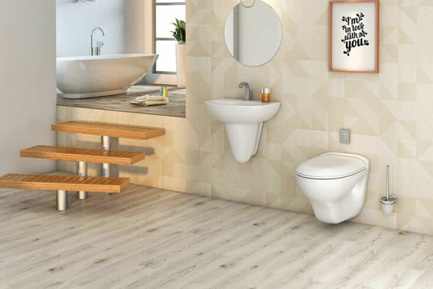

Home & Garden

Category: Home & Garden
How to Choose the Best Home Inspection Solutions?
Choosing a home inspection service is not something that can be ignored or taken lightly. It is the critical thing in real estate, an appraisal that can contribute to making and breaking the deal. A home inspection is not simply a check-up but it can drive to an ultimate decision.
Home & Garden
Finding The Perfect Window Blinds For Your Home
Window blinds have become an essential household accessory. With new and improved designer homes, people’s needs have evolved. Modern houses in Australia require curtains that accentuate the design of the overall house. Most homeowner’s needs from window curtains have changed.
Home & Garden
How To Use Bamboo Bowls For Kitchen
Bamboo bowls are a traditional set of dining materials. They are pretty and are very practical to use in the home kitchen. They are very classical to use. You can find timeless beauty in the classic bamboo bowls. Firstly, they are eco-friendly as it has a low affect on the environment. Secondly, they are a brilliant choice to use as it looks good both as home decor and serving bowls.
Home & Garden
Stay Warm and Cozy in Bed During Winters Nights
The human body is a natural radiator, which means that it can keep warm naturally with some additional measures. For instance, correct layers of bedding can keep you warm on a cold winter night. You won’t be shivering all night and your body would feel warm and cozy, which will offer a good night’s sleep.
Home & Garden
15 Ways To Celebrate Christmas At home
New Year’s Eve 2021 will seem more special than the celebration of the rest of the year. Instead of going out to the city for an evening, a lot of us could settle down on the couch for a night. And instead of ringing hundreds of friends in 2021, our visitor lists may be limited to the people who remain in our households. But simply due to the fact your 2021 excursion is unique would not suggest it can not be simply as festive, celebratory, and significant as years beyond. With the proper quantity of making plans, you may throw an exquisite New Year’s Eve bash proper at domestic. Also, get the Best Christmas and New Year Wishes 2021 to wish someone a very happy new year.
Home & Garden
Current Trends Of Sanitaryware Products

In recent years, washrooms consolidate usefulness alongside comfort and have begun to mirror the way of life of an individual. To upgrade the presence of restrooms, the interest in tiles, clean products, and washroom fittings has multiplied the nation over. These items are additionally going through fast change because of various developments in the business. Another kind of new-age restroom fitting incorporates fixtures with sensors that utilize transient clocks for effective water utilization. Let’s discuss Sanitaryware Products trends.